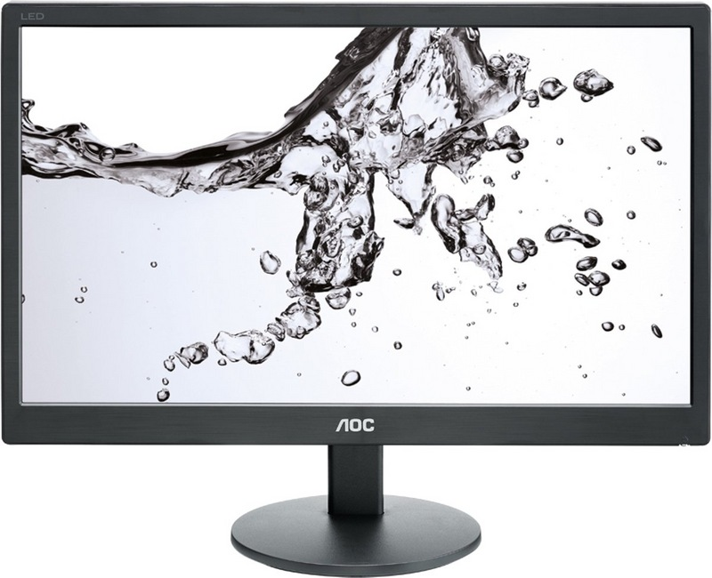
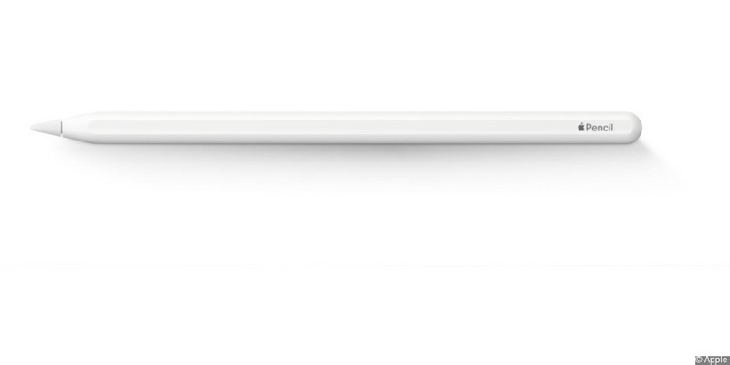

очень какчественый графический планшет-дисплей
хотя его главный недостаток это высокая цена

также качественый графический планшет-дисплей
но уже с более умереной ценой

очень бюджетная моудель не имеющея собственного
дисплея

при работе с графикой всегда нужен монитор
это более подходящая модель
ну кудаже без стилуса он всегда нужен
при работе с графикой
